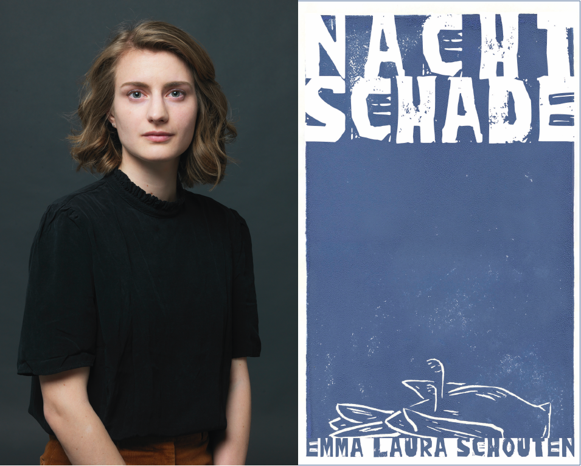

Foto (c) Annaleen Louwes
Over
Emma Laura Schouten (Haarlem, 1994) schrijft essays, proza en poëzie. Haar debuutroman Nachtschade (Van Oorschot, 2025) stond op de shortlist voor de Bronzen Uil 2025 en staat op de longlist van de Libris Literatuur Prijs 2026. Schouten werkt aan een tweede roman, waarvoor ze een beurs ontving van het Letterenfonds.
Nachtschade
Wanneer iemand haar vraagt hoe het voelt, migraine, tekent de hoofdpersoon uit Nachtschade een grillige spiraal. Ze leeft in eindeloze cycli van tijd en tussentijd. Wanneer de migraine toeslaat brengt ze de tussentijd door in een schemerruimte, terwijl vormloze monsters door haar schedel slenteren. In de andere tijd probeert ze een leven op te bouwen ondanks de grilligheid van haar eigen lichaam. Als houvast verzamelt ze de stemmen van vrouwen die haar voorgingen in de tussentijd, op zoek naar soelaas, naar een teken, naar magie.
In het rijke en erudiete Nachtschade verkent Schouten het niemandsland tussen ziek en gezond. Door een kier in haar hoofd daalt de lezer af naar een hallucinante wereld opgebouwd uit kristalheldere vignetten, scherpe observaties, verwondering en verwantschap met vrouwelijke denkers en schrijvers.
Over de ziekte-ervaring van migraine in de huidige maatschappij schreef Schouten eerder het essay Tussen ziek en gezond: De hiërarchie van ziektes (Uitgeverij HetMoet / The New Menard Press).
“Schouten slaagt er in deze grillige, zoekende roman, vol filosofische overpeinzingen, wonderwel in om het schemergebied op te roepen waarin iemand leeft die chronisch pijn heeft” - de Volkskrant
“Dit boek wordt gedragen door Schoutens schrijfexperimenten” - De Standaard (****)
“Onbevreesd gooit Schouten haar literaire talent in de strijd. En dat leidt tot ijzersterke, poëtische beschrijvingen.” - De Groene Amsterdammer
“Nachtschade maakt indringend duidelijk hoe waanzinnige en terugkerende pijn je leven (ver)vormt” - NRC (***)